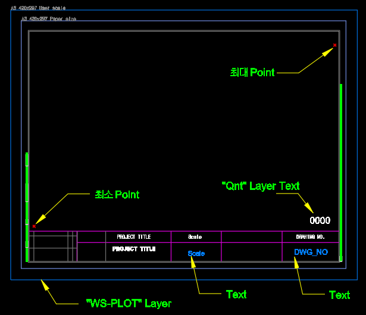

SFB
도면 양식(Form) 블록을 선택하여 메모리에 저장하는 명령입니다.
이후 FFB 명령 실행 시 이 Form을 기준으로 도면에 맞는 스케일과 위치에 자동 삽입합니다.
회사별 도면 양식(Form) 블록을 미리 선택해 두면, 이후 FFB가 도면 크기에 맞는 스케일을
자동으로 계산하여 Form을 삽입합니다. SFB는 Form 선택만 담당하며,
선택된 블록·텍스트 플레이스홀더·폴리선의 ObjectID를 정적 변수에 저장합니다.
| 구성 요소 | 역할 |
|---|---|
| BlockReference (Form 블록) | 도면 양식 블록 본체입니다. SFB 선택 범위에 포함해야 합니다. |
MText/DBText — Scale 레이어또는 내용이 "Scale"인 텍스트 | 스케일 표기 플레이스홀더입니다. FFB가 자동 계산한 스케일 문자열(1 / N)로 교체합니다. |
MText/DBText — Qnt 레이어또는 내용이 "Qnt"인 텍스트 | 수량 표기 플레이스홀더입니다. FFB가 도면에서 읽은 수량 텍스트로 교체합니다. |
| 그 외 MText/DBText | 도면 번호 표기 플레이스홀더입니다. FFB가 도면 이름 텍스트로 교체합니다. |
| Polyline | AutoPlot용 경계 폴리선입니다. FFB가 Form과 함께 복사하여 배치합니다. |
SFB를 입력하고 Enter를 누릅니다.FFB로 도면에 Form을 삽입합니다.
| 항목 | 설명 |
|---|---|
| 선택 대상 | Form 블록, 텍스트 플레이스홀더(도면번호·Scale·Qnt), Polyline을 함께 선택합니다. |
| 저장 내용 | 블록 이름, 블록 위치, Scale/Qnt/도면번호 텍스트 ObjectID, Polyline ObjectID를 정적 변수에 보관합니다. |
| AutoScale.dat | 선택 완료 후 AutoScale.dat을 읽어 프로파일 데이터를 메모리에 로드합니다. |
| 레이어 자동 생성 | WS-PLOT-1(색상 1), Qnt(색상 0) 레이어가 없으면 자동으로 생성됩니다. |
| 적용 환경 | AutoCAD / BricsCAD (Rhino 미지원) |
SFB는 Form 정보를 메모리에만 저장하며 도면에 아무것도 삽입하지 않습니다.
실제 Form 삽입은 FFB로 수행합니다. 세션이 종료되면 저장된 정보가 초기화되므로,
새 세션 시작 후 FFB를 실행하기 전에 SFB를 먼저 실행해야 합니다.
Scale / Qnt / 도면번호 텍스트가 없으면 FFB 실행 시 해당 항목이 채워지지 않습니다.